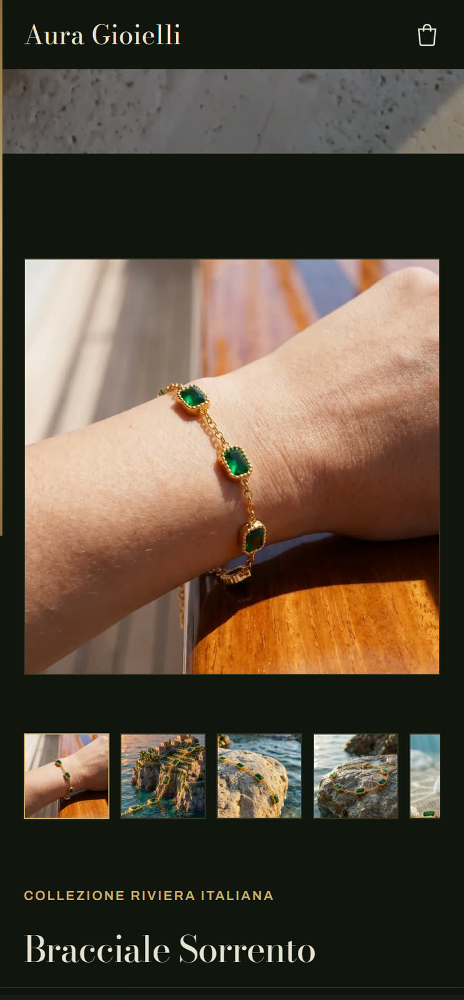

AURA GIOIELLI
Il nostro e-commerce · un progetto del fondatore
Un negozio di gioielli dove ogni immagine nasce in studio.
I film
Con le stesse regole nascono anche i film: stessi gioielli, stessa luce, nessun set.
«La Fortuna» · spot · luglio 2026
«Quello che resta» · film · luglio 2026
Il negozio
Anche il tema del negozio l'abbiamo scritto da zero, pagina per pagina.

Il tema nuovo, in arrivo online
Come ci siamo arrivati
- Le foto del gioiello vero, da angoli diversi: sono il riferimento che lo scatto non può tradire.
- Lo scatto nasce con regole di fedeltà scritte per ogni gioiello, e si controlla uno per uno contro le foto vere.
- Dagli scatti approvati nascono le pagine del negozio e i film.
La direzione scartata
Il reel A12 aveva uno script che non ci convinceva, e non è uscito. Ne abbiamo tenuto il metodo: ogni gioiello parte da almeno tre foto vere, da angoli diversi.
I numeri
17gioielli a catalogo, contati sul negozio il 18 settembre 2026